Iris Theme (Html5 & CSS3) Documentation
(shared on my.apploadz.ru)
Table of Contents
Note: Loading items per Ajax (index.html) does not work locally with Google Chrome. Other Browsers like Firefox, Safari, Opera or Internet Explorer should have no problems to run it locally.
Locally means, that your opened the index.html from your hard drive. If you're running the theme from a Server, it will be fine.
Html
Files
You should find 11 HTML files & 1 PHP files
- index.html
- about.html
- shortcodes.html
- pricingtable.html
- blog.html
- blog-single.html
- portfolio-2-columns.html
- portfolio-3-columns.html
- portfolio-4-columns.html
- portfolio-single.html
- contact.html
- contact_send.php
The index.html is the only file where you can load your portfolio works per ajax.
Boxed style: If you don't want the top-, pagtitle-, slider- and bottom-section to overlay the main section you just need to include style-boxed.css AND mqueries-boxed.css in place of the default css (style.css & mqueries.css) in the head of your files.
Example:
<link href="files/css/style.css" rel="stylesheet" type="text/css" />
BECOMES
<link href="files/css/style-boxed.css" rel="stylesheet" type="text/css" />
General classes or id's
The following classes and Id's are general names with general features
- #sidebar -> this id is used when you use a sidebar. MUST BE in combination width .left_float or .right_float
- #maincontent -> when you use a sidebar use also use this id for the main content. MUST BE in combination with .left_float or .right_float
- .wrapper -> wraps the element to the main with (ex. 940px)
- .wrapperoverlay -> for all alements which overlay the main wrapper
- .clearfix -> use "clearfix" for all div-tags which contains any floating element (except [p])
- .sidebar_section -> use this class for your different sidebar_sections
- .left_float OR .right_float -> float use for any element
- .seperator -> adds a seperator to the top of the element. IN COMBINATION with .sectiontitle
- .seperator-section -> adds a seperator to the top of the element. without .sectiontitle
- .color -> only for the ANCHOR tags | font will be colored
- .imgoverlay -> wrap all your img-tags which uses an anchor-tag within a div-tag with this class. Without this wrapping the jquery does not animate
- .loadcontent -> only for the ANCHOR tags - use this class if this is an intern link to load content by ajax
The different html files has different body id's
- #home -> for the home-page (index.html)
- #blog -> for all blog content (blog.html & blog-single.html)
- #portfolio -> for all portfolio content (portfolio-4-columns.html, etc & portfolio-single.html)
- #content -> for all other/general types of content (about.html, shortcodes.html, etc)
Navigation/Menu
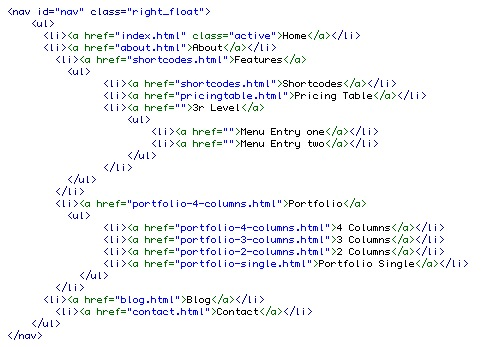
You can add, delete or change the menu to your needs.
The active menu point just takes a class active
For the iphone/Smartphone version javascript creates a selectbox depending on your menu.
Slider
Add as much slides as you want.
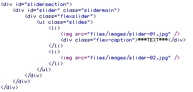
You also can add a caption to the slides.
Note: The slider also is wrapped by #animationsection. If you decide to work without an dynamic ajax load you can delete this wrapper.
You can include the slider to your blog/portfolio posts.
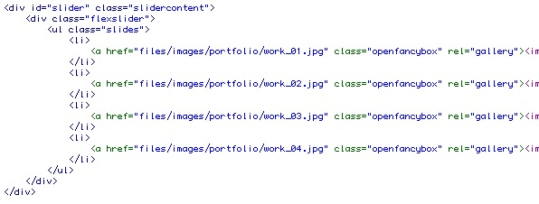
Just change the classname to slidercontent
Fancybox
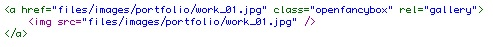
Add the classname openfancybox to the anchor tags you want to open in the fancybox.
Of course you need to adapt the href/link to the right image.
If you want to connect some items to a gallery, just add a rel attribute with the same name.
Loadingsection
Don't change anything about these tags
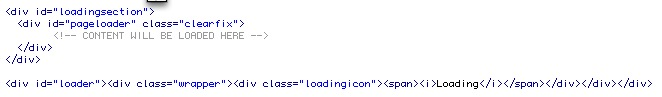
You can delete them if you don't want to use the dynamic ajax loader.
Note: In this case delete all classes loadcontent from the anchor tags.
Load content
For any anchor-tag which should load content into the #loadingsection, be sure to use the classname "loadcontent" with a 'rel' and a correct 'href' attribute
rel attribute must be unique
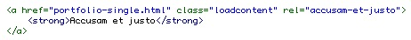
Masonry (isotope)
Create as much items as you wants, and use it the following way
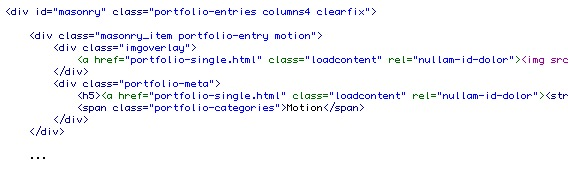
Explanation
- .masonry_item -> this class is needed to declare a masonry_item
- .portfolio-entry -> for the css-style of the items
- .motion -> this is the name for the filter attribute
All the masonry_items will be wrapped into a masonry ID
Choose here the number of columns you want to display columns4.
Filter
The filter is part of the isotope script
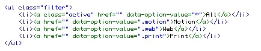
All filter anchors needs a 'data-option-value' attribute with the correct filter name (example: .motion or .print)
Contact Form
First of all you must enter a absolute path for the target!

Example: http://www.yoursitename.com/contact_send.php (No relative path)
If you want to add new fields for the contact form, go to the contact.html
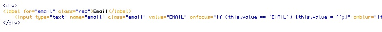
For each form element there is a label and the field type wrapped into a div (That's importatnt for the validation).
Give a class "req" to the label if this is a requiered field. (the label is hidden in the css)
Name and Class of the input type MUST be the same.
value is the name of the field (label name). Please take uppercase for a nice layout.
Onfocus & Onfocus are javascript rules. Just change the Names (same as value).
You will find 3 hidden fields
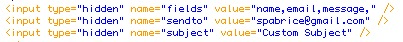
If you've added a new field, you need to add the name of this field into the value of name="fields".
Write the recepient email into the value of name="sendto" and choose a Subject name
Google Map
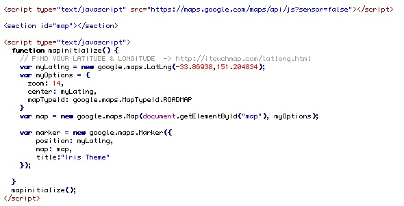
To change the point on your google map you need to find out the Latitude & Longitude.
Go to this site: http://itouchmap.com/latlong.html
Type your adress or click in the map to find out your latitude and longitude.
Click then on the point icon to see the datas.
Copy them and replace the existing (-33.86938,151.204834) with yours.
Audio
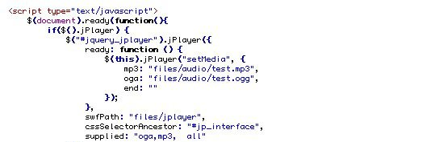
Include this snippet where you want to include an audio file.
Just change the path to your audio file.
Video
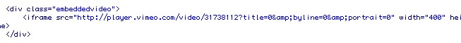
When you're using embedded videos from youtube or vimeo, just wrap the iframe into a .embeddedvideo.
CSS
You should find the following css files
- fonts.css -> include the colaborate font
- style.css -> contains all of the specific stylings for the page including the reset styles
- isotope.css -> contains css transformations for the isotope script
- flexslider.css -> contains css rules for the flexslider
- fancybox.css -> fancybox css
- mqueries.css -> contains the mediaqueries for being responsive
- jplayer/jplayer.css -> styling for the audio
- style-boxed.css -> for a boxed styling
- mqueries-boxed.css -> for a boxed styling
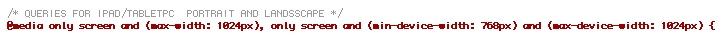
On the first part of the mediaqueries you'll find all rules for the tablet-devices.
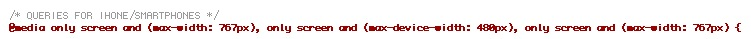
On the second part of the mediaqueries you'll find all rules for smartphones.
Changing Background
If you want to change the background, just go to your style.css and change the image path from the body (line 97).
Javascript
The index.html includes 9 javascript files
- jquery-1.7.1.min.js -> jquery library
- jquery.modernizr.min.js -> modernizr script
- jquery.isotope.min.js -> isotope script
- jquery.easing.1.3.js -> easing script
- jquery.easing.compatibility.js -> easing compatibility
- jquery.fancybox.pack.js -> fancybox
- jquery.flexslider-min.js -> flexslider
- loader.js -> contains the loader script (only included in index.html)
- script.js -> contains some general actions and initialise the plugins such as isotope, etc
- jplayer/jquery.jplayer.min.js -> jplayer
script.js and loader.js
These are the only javascript files which can be modified tou your needs.
You'll find the initialising of the isotope, hover-effect,... Just set the settings to your needs.
PHP (contact form)
There is one php file for the contact form:
contact_send.php
You just need to do changes if you want to change the confirmation message or to style your email.